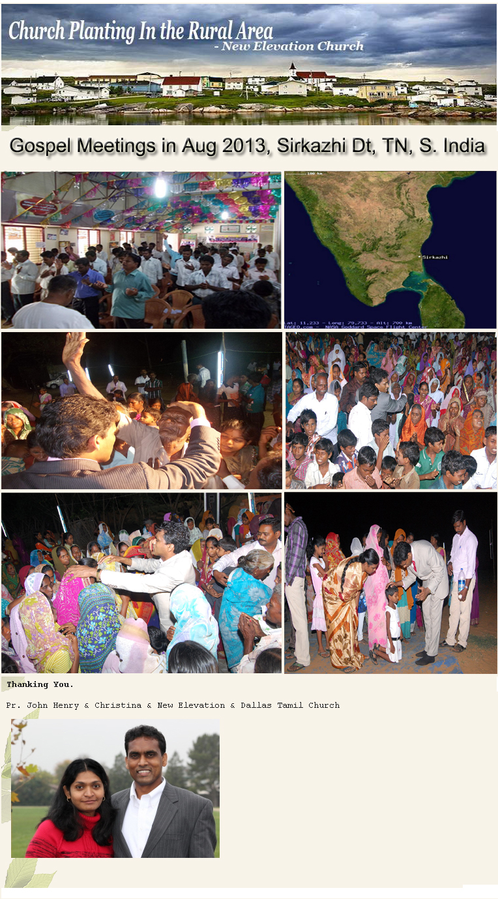
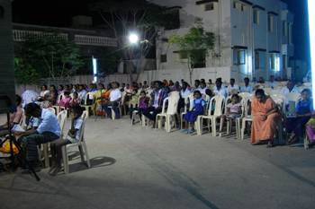
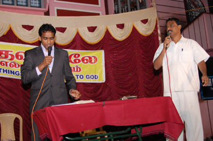
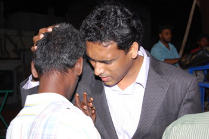
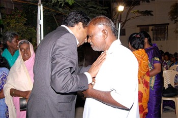
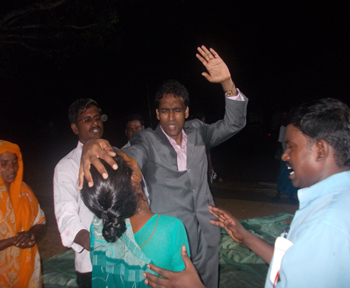
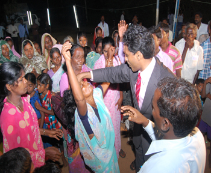
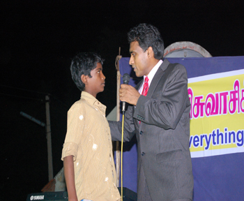
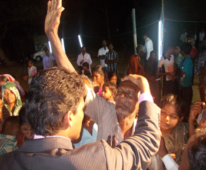
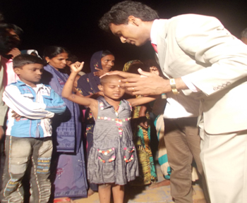

Over 150 pastors and 200 volunteers are working towards these outreach meetings. The pre-launch meetings were greatly successful because of the efforts of Dallas Tamil Church Pastors and friends. We believe that every village needs to hear the good news of Jesus Christ. Thanks to all our friends and partners who are behind this great move of God.
Sirkazhi
, is a municipal town in
Nagapattinam district
in Tamil Nadu, India. It is located 13 km (8.1 mi) from the coast of the
Bay of Bengal
, and 250 km (160 mi) from the state capital
Chennai
. For more details visit the wikipedia site at
http://en.wikipedia.org/wiki/

Meeting Photos as February, 2013
 |
 |
 |
 |
 |
 |
 |
 |
 |